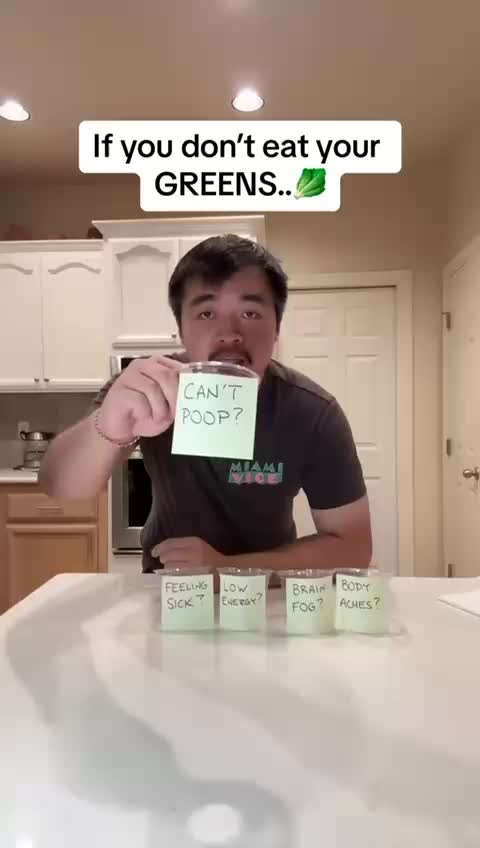
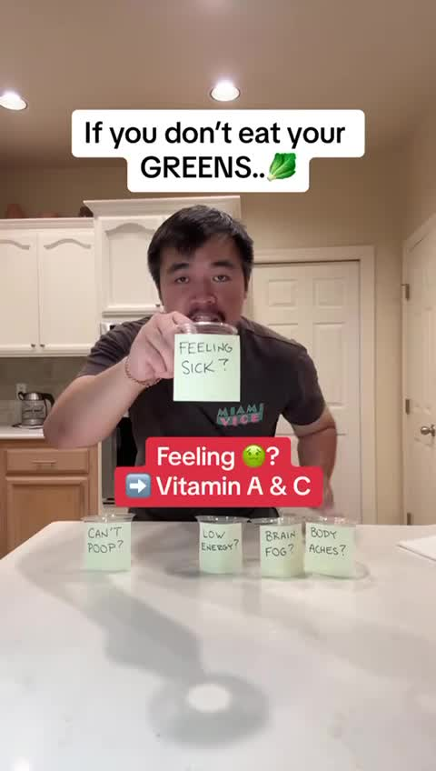
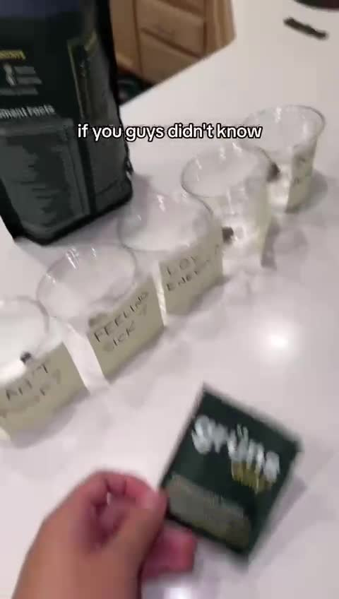
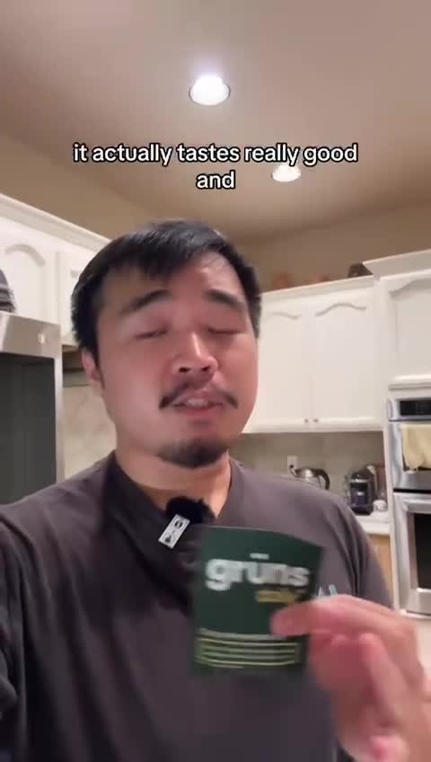
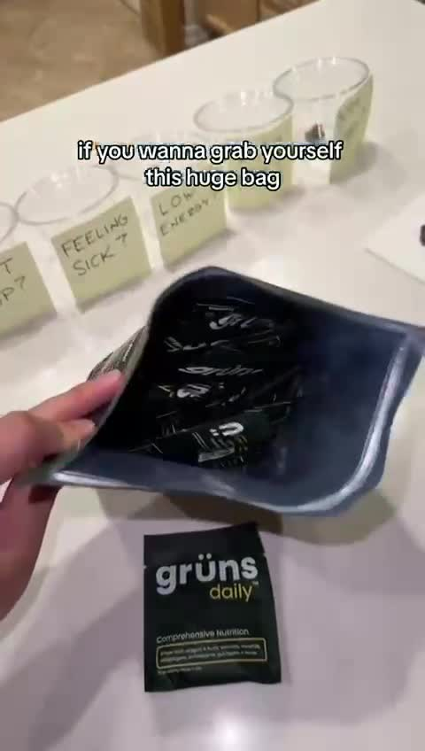
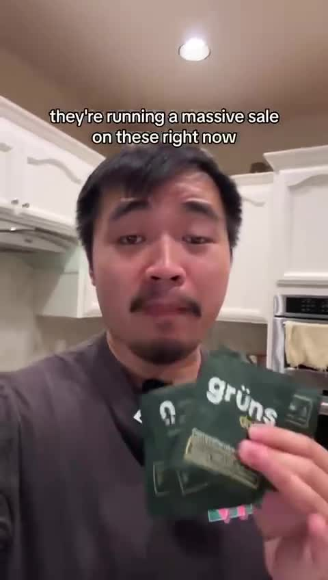
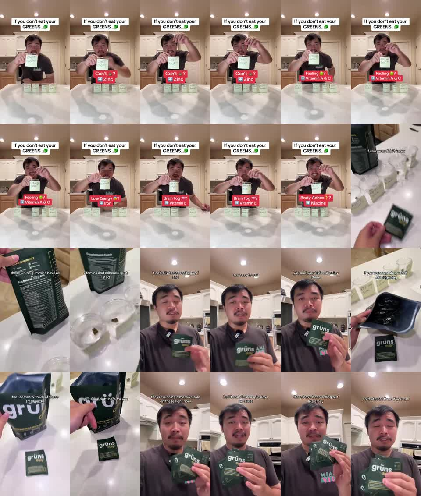

Hypothesis
If viewers connect skipped greens with common discomforts, one daily packet will feel like a convenient fix and increase click or purchase intent.
The creative converts a vague greens habit into a symptom checklist, then positions one packet as the convenient bundled answer.
If viewers connect skipped greens with common discomforts, one daily packet will feel like a convenient fix and increase click or purchase intent.
Health-curious, convenience-seeking adults or parents who know they should eat greens but do not consistently do it.
Cold prospecting direct-response creative with conversion intent.
Click-through, offer-page visits, first purchase, CAC, and ROAS.
Problem-aware to solution-aware.
medium

symptom-led hook
The viewer is pushed into a quick self-check: the ad reframes a vague nutrition habit as a list of embarrassing or uncomfortable daily problems.

diagnostic ladder
The repetition turns scattered symptoms into a checklist, making the viewer wait for their own problem to appear.

bundle proof pivot
The ad tries to convert the symptom checklist into a bundled-product answer, using the product label as a proof cue.

friction reducer
After the health-problem setup, the ad reduces usage friction by promising taste, ease, and family acceptance.

package-value and link transition
The product moves from health answer to tangible purchase unit: a big bag, many daily packs, and a direct link cue.

urgency close
The ad closes with scarcity and urgency, but the sale and sell-out claims are not independently proven in the video.
The creative converts a vague greens habit into a symptom checklist, then positions one packet as the convenient bundled answer.
The viewer is moved from 'greens are optional' to 'my daily discomforts might be solvable through one easy supplement routine.'
Translate the structure into creator-workflow pain: labeled editing bottlenecks become a visible Submagic feature ladder and proof scene.
The proof is thin because symptom-to-nutrient links, family acceptance, sale urgency, and sell-out claims are asserted rather than verified.
The creator stands in a kitchen behind five clear cups labeled with symptom notes; the top caption says 'If you don't eat your GREENS..' and the first cup reads 'CAN'T POOP?'. A red overlay maps 'Can't [poop]?' to 'Zinc'.
The viewer is pushed into a quick self-check: the ad reframes a vague nutrition habit as a list of embarrassing or uncomfortable daily problems.
Translate the structure into creator-workflow pain: labeled editing bottlenecks become a visible Submagic feature...
4 Evidence sources
The creator repeats the cup reveal pattern: 'Feeling sick?' maps to vitamin A and C, 'Low energy?' maps to iron, 'Brain fog?' maps to vitamin E, and 'Body aches?' maps to niacin/niacine in red overlays.
The repetition turns scattered symptoms into a checklist, making the viewer wait for their own problem to appear.
Translate the structure into creator-workflow pain: labeled editing bottlenecks become a visible Submagic feature...
6 Evidence sources
The creator holds a Gruns daily packet close to camera while captions say it 'actually tastes really good,' is 'easy to eat,' and that 'you and your kids will enjoy them'.
After the health-problem setup, the ad reduces usage friction by promising taste, ease, and family acceptance.
Translate the structure into creator-workflow pain: labeled editing bottlenecks become a visible Submagic feature...
5 Evidence sources
The creator returns to a close-up with several packets and captions say there is a 'massive sale,' it 'ends in a couple days,' the product has been 'selling out like crazy,' and viewers should 'try to get them if you can'.
The ad closes with scarcity and urgency, but the sale and sell-out claims are not independently proven in the video.
Translate the structure into creator-workflow pain: labeled editing bottlenecks become a visible Submagic feature...
6 Evidence sources

Use a symptom self-check to create personal relevance, then use product proof and sale urgency to push action.
Turn a vague nutrition habit into an urgent, personal reason to try a convenient supplement pack.
The creator stands in a kitchen behind five clear cups labeled with symptom notes; the top caption says 'If you don't eat your GREENS..' and the first cup reads 'CAN'T POOP?'. A red overlay maps 'Can't [poop]?' to 'Zinc'.
The viewer is pushed into a quick self-check: the ad reframes a vague nutrition habit as a list of embarrassing or uncomfortable daily problems.
symptom-led hook
Translate the structure into creator-workflow pain: labeled editing bottlenecks become a visible Submagic feature ladder and proof scene.
The creator repeats the cup reveal pattern: 'Feeling sick?' maps to vitamin A and C, 'Low energy?' maps to iron, 'Brain fog?' maps to vitamin E, and 'Body aches?' maps to niacin/niacine in red overlays.
The repetition turns scattered symptoms into a checklist, making the viewer wait for their own problem to appear.
diagnostic ladder
Translate the structure into creator-workflow pain: labeled editing bottlenecks become a visible Submagic feature ladder and proof scene.
The camera switches to handheld product footage near the cups and a Gruns packet; captions say 'if you guys didn't know' and 'these Gruns gummies have all those vitamins and minerals I just listed' while the bag's supplement facts panel is shown.
The ad tries to convert the symptom checklist into a bundled-product answer, using the product label as a proof cue.
bundle proof pivot
Translate the structure into creator-workflow pain: labeled editing bottlenecks become a visible Submagic feature ladder and proof scene.
The creator holds a Gruns daily packet close to camera while captions say it 'actually tastes really good,' is 'easy to eat,' and that 'you and your kids will enjoy them'.
After the health-problem setup, the ad reduces usage friction by promising taste, ease, and family acceptance.
friction reducer
Translate the structure into creator-workflow pain: labeled editing bottlenecks become a visible Submagic feature ladder and proof scene.
The creator opens a large Gruns bag full of small packets; captions say 'if you wanna grab yourself this huge bag,' 'that comes with 28 of these small packs,' and 'I put a link right here for you'.
The product moves from health answer to tangible purchase unit: a big bag, many daily packs, and a direct link cue.
package-value and link transition
Translate the structure into creator-workflow pain: labeled editing bottlenecks become a visible Submagic feature ladder and proof scene.
The creator returns to a close-up with several packets and captions say there is a 'massive sale,' it 'ends in a couple days,' the product has been 'selling out like crazy,' and viewers should 'try to get them if you can'.
The ad closes with scarcity and urgency, but the sale and sell-out claims are not independently proven in the video.
urgency close
Translate the structure into creator-workflow pain: labeled editing bottlenecks become a visible Submagic feature ladder and proof scene.
| # | Claim | Proof type | Weakness | Evidence |
|---|---|---|---|---|
| 1 | Skipping greens is associated in the creative with common discomforts. | visual symptom props and headline | The association is a persuasive setup, not verified medical proof. |
2 evidence IDs
|
| 2 | Each named discomfort can be mapped to a nutrient. | red overlay mappings beside labeled cups | The mappings are asserted quickly without citations or dosage context. |
5 evidence IDs
|
| 3 | The product contains the vitamins and minerals just listed. | product packet, bag, and supplement facts panel | The panel is visible but not readable enough to independently verify every listed nutrient. |
4 evidence IDs
|
| 4 | The product reduces adoption friction by tasting good and being easy to eat. | creator testimonial captions with packet held close to camera | Taste and ease are subjective claims from the creator. |
3 evidence IDs
|
| 5 | The purchase unit offers many small daily packs. | open bag and captioned 28-pack claim | The video shows multiple packs but does not independently prove the exact count. |
2 evidence IDs
|
| 6 | There is urgency because of a sale, deadline, and sell-out pressure. | captioned urgency close | No inventory, price, or campaign source is shown. |
4 evidence IDs
|
People often know they should eat better, but they respond faster when a broad health habit is connected to a specific annoyance they already feel.
A skeptical viewer may reject the ad because the nutrient mappings, health implications, sale deadline, and sell-out pressure are visible claims but not substantiated with citations, pricing, inventory proof, or third-party validation.
If the product proof appeared earlier, the ad would likely feel less like unsupported symptom mapping and more like a concrete supplement demo. If the symptom ladder used fewer examples, the hook could feel sharper and leave more time for credible proof. If the urgency close included visible price or inventory context, the scarcity claim would feel less generic. If the creator opened with the bag instead of the symptom cups, the ad would likely lose its strongest self-diagnostic hook.
Fear: the viewer may recognize one of the symptom labels and feel they are neglecting a basic health habit (ev_keyframe_001, ev_keyframe_005, ev_keyframe_008, ev_keyframe_011). Desire: the viewer wants a simpler routine than cooking or consistently eating greens (ev_keyframe_016, ev_ocr_016). Objection: supplements can taste bad or be hard for a family to adopt, so the creator claims taste, ease, and kid acceptance (ev_keyframe_015, ev_keyframe_017). Proof need: the product must plausibly contain the listed nutrients, so the bag and supplement facts panel are shown, though the label is not fully legible (ev_keyframe_013, ev_keyframe_014). Urgency pressure: the ad adds sale, deadline, and sell-out claims at the end, but those claims are unverified inside the video (ev_keyframe_021, ev_keyframe_022, ev_keyframe_023, ev_keyframe_024).
| Time | Viewer state | Trigger | Evidence |
|---|---|---|---|
| 0.000-0.500 | self-check | A blunt greens headline and symptom cups make the viewer scan for a problem they recognize. |
3 evidence IDs
|
| 2.000-8.070 | diagnostic momentum | The creator repeats symptom-to-nutrient reveals across multiple cups. |
4 evidence IDs
|
| 9.415-12.105 | solution recognition | The product packet and supplement facts appear after the symptom list. |
3 evidence IDs
|
| 13.450-16.140 | friction check | Taste, ease, and family enjoyment are stated while the packet is held in hand. |
3 evidence IDs
|
| 17.485-20.175 | purchase sizing | The bag is opened and the 28 small packs claim is introduced before the link cue. |
3 evidence IDs
|
| 21.520-25.555 | urgency pressure | The closing captions stack sale, deadline, sell-out, and 'get them if you can' language. |
4 evidence IDs
|
| Dimension | Score | Weakness / next improvement | Evidence |
|---|---|---|---|
| Copycat Safety high confidence |
1/3 | The surface execution is heavily tied to the competitor brand, product claims, and creator setup; only the mechanism should transfer. |
4 evidence IDs
|
| Proof Specificity medium confidence |
1/3 | The supplement facts panel is a proof cue, but the claims are not readable or independently supported. |
4 evidence IDs
|
| Cta Urgency high confidence |
2/3 | The CTA is explicit, but the sale and sell-out proof is unsupported. |
5 evidence IDs
|
| Friction Reduction high confidence |
2/3 | Taste and ease are addressed, but they remain creator assertions. |
3 evidence IDs
|
| Pacing medium confidence |
2/3 | The repeated symptom pattern builds momentum but may overstay before the product appears. |
6 evidence IDs
|
| Hook Strength high confidence |
3/3 | The hook is visually legible and problem-specific, but the first proof should arrive sooner. |
3 evidence IDs
|
| Problem Clarity high confidence |
3/3 | The cups make the pain stack easy to scan. |
5 evidence IDs
|
| Product Visibility high confidence |
3/3 | The packet and bag are repeatedly shown after the setup. |
5 evidence IDs
|
Native talking-head framing, large captions, prop-led hook, and direct link language fit TikTok patterns, though health proof remains weak (ev_keyframe_001, ev_keyframe_020, ev_keyframe_024).
The vertical kitchen demo and readable top captions fit Reels, but the long symptom ladder may need tighter compression for cold paid placements (ev_keyframe_005, ev_keyframe_008, ev_keyframe_011).
The self-check hook can work on Shorts, but product proof does not appear clearly until around 9.415s, which may be late for low-intent viewers (ev_keyframe_012).
Meta paid would likely need stronger compliance review and substantiation for symptom, nutrient, sale, and sell-out claims (ev_keyframe_002, ev_keyframe_014, ev_keyframe_021, ev_keyframe_023).
The consumer supplement hook, bathroom-adjacent symptom language, and scarcity close do not naturally fit LinkedIn's business context (ev_keyframe_001, ev_keyframe_024).